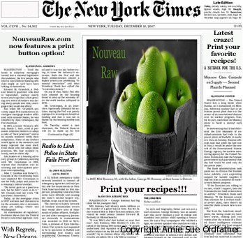

We have added a print button feature!

CNN, New York Times, The Daily News, Oprah and Google News have released a front page story…
Read all about it – Nouveauraw.com now has a PRINT BUTTON feature!!!
Ok, so maybe it’s not really an above-the-fold headline or national news but to me it’s pretty darn exciting! haha Bless my sweet husband and Chris for helping me get this feature up and running. I am so darn picky. It had to be perfect! You all deserved it. :) So Mom, you can now print all the recipes! She has been waiting patiently for this feature. It’s a pretty sweet one too. At the bottom of each post you will notice where you can click on the “print this recipe” button. It can be found on the lower right hand corner. But the neat thing is that you can either print the recipe or you can save it as a PDF. It doesn’t just stop there either, you can hover over sections of the recipe and delete them if you want to. Basically, you have control over how you want the recipe to print. Example: with the picture or without, with my little story or without, and so forth. But WAIT….there’s more! ok, not really but I love saying that. I easily entertain myself, don’t I.
I thought it would neat, if anyone was interested, to print out the recipes and add them to your collection in a binder with plastic sheet protectors. That way, you can have all your favorite recipes at your finger tips! I always end up taking my laptop into the kitchen and lord only knows all the food I have to chip off of my screen and how I have splatters of date paste that causes my keyboard buttons to stick.
Many blessings and happy uncooking! amie sue
© AmieSue.com